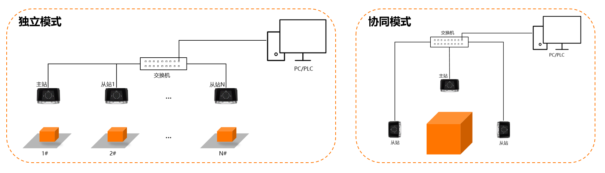

主从
多读码器主从组网由一个主读码器和多个从读码器组成，实现多读码器协同工作。本节以两个读码器为例为您介绍如何配置主从组网。
主从工作的主要原理是将多台读码器中的其中一台设置为主站（主读码器），其余读码器设置为从站（从读码器），从站将读码结果发给主站，主站进行整合或转发，然后将读码结果发给与之相连的上位机或客户端，实现多相机的协同工作。独立模式和协同模式示意图如下。

图 1 工作模式示意图
|
工作模式 |
特点 |
使用场景 |
优势 |
|---|---|---|---|
|
独立模式 |
主站不处理也不融合数据，将自身数据和从站数据转发给上位机。 |
每个读码器负责不同工位的条码识别任务，最后由一个上位机（PC或PLC）接收数据。 |
减少上位机的端口开启数，只需一个端口便可将所有数据上传至上位机中。 |
|
协同模式 |
主站将自身数据和从站数据进行处理和融合，最后将处理后的数据发给上位机。 |
当一个产品有多个面或产品过大，一个读码器视野无法覆盖所有区域时，通过多读码器协同模式覆盖所有区域。 |
方便过滤一个物体上相同的条码，最后整合输出至上位机，省去了在上位机上进行数据融合和数据处理的过程。 |
-
在主站的主从配置页面可对主从站执行如下可选操作。
-
开始/停止取流：单击主站或从站区域的开始取流或停止取流。
说明当从站触发源配置为主从触发时，从站必须为取流状态才能响应主站的触发信号进行采图读码。
-
查看取流结果：在主站或从站区域的取流结果处查看读码情况，此处参数与主界面历史记录参数一致。
-
删除从站：单击从站区域的。
-
 。
。分享